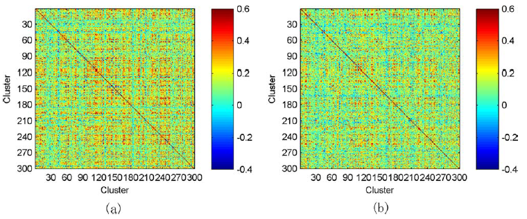
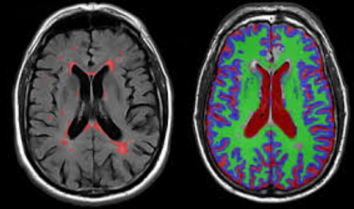
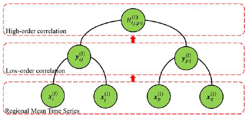
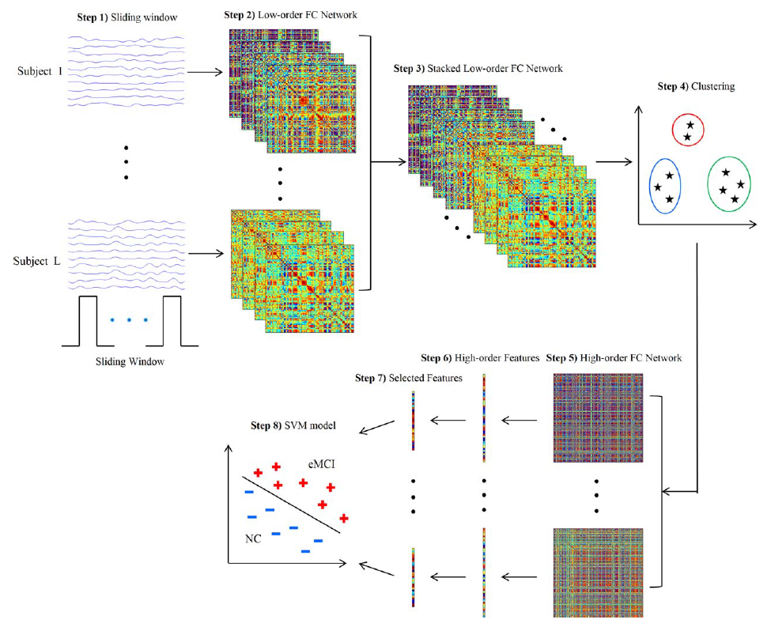

Brain functional connectivity (FC) network, estimated with resting-state functional magnetic resonance imaging (RS-fMRI) technique, has emerged as a promising approach for accurate diagnosis of neurodegenerative diseases. However, the conventional FC network is essentially low-order in the sense that only the correlations among brain regions (in terms of RS-fMRI time series) are taken into account. The features derived from this type of brain network may fail to serve as an effective disease biomarker. To overcome this drawback, we propose extraction of novel high-order FC correlations that characterize how the low-order correlations between different pairs of brain regions interact with each other. Specifically, for each brain region, a sliding window approach is first performed over the entire RS-fMRI time series to generate multiple short overlapping segments. For each segment, a low-order FC network is constructed, measuring the short-term correlation between brain regions. These loworder networks (obtained from all segments) describe the dynamics of short-term FC along the time, thus also forming the correlation time series for every pair of brain regions. To overcome the curse of dimensionality, we further group the correlation time series into a small number of different clusters according to their intrinsic common patterns. Then, the correlation between the respective mean correlation time series of different clusters is calculated to represent the high-order correlation among different pairs of brain regions. Finally, we design a pattern classifier, by combining features of both loworder and high-order FC networks. Experimental results verify the effectiveness of the high-order FC network on disease diagnosis.

Fig 1. Averaged high-order FC networks for all eMCI subjects (a) and NC subjects (b), respectively.

Fig 2. RS-fMRI examples .
In this study, we used the publically available neuroimaging data from the Alzheimer’s Disease Neuroimaging Initiative (ADNI) database. ANDI was launched in 2003 by the National Institute on Aging, the National Institute of Biomedical Imaging and Bioengineering, the Food and Drug Administration, private pharmaceutical companies and nonprofit organizations. Initially, the goal of ADNI is to define biomarkers for use in clinical trials and to determine the best way to measure the treatment effects of AD therapeutics (adni.loni.ucla.edu). Now, its goal has been extended to detect AD at a pre-dementia stage using biomarkers. Multiple biomarkers, including MRI, PET, and related neuropsychological assessments are combined together to detect the progression of eMCI and early AD. Determining sensitive and specific biomarkers can facilitate the development of new treatments, reduce the time and cost of clinical trials, and promote our understanding of the biological underpinnings of AD/eMCI.
You could download ADNI by clicking following button.
Typical procedures of FC-based eMCI classification usually include the following components: network construction, feature extraction and selection, and classification. This study mainly focuses on the first step, that is, network construction, and thus simple existing methods are applied to implement other steps.

Fig 3. Calculation of the high-order correlation from the low-order correlation layer by layer.
In Figure 4, we provide the flowchart of the high-order FC network construction and its application in eMCI identification. Specifically, the proposed framework includes the following eight steps: (1) partition the entire RS-fMRI time series into multiple overlapping segments of subseries; (2) construct a collection of temporal low-order FC networks/matrices, one for each segment; (3) stack all temporal low-order FC networks/matrices of all subjects together to obtain a correlation time series for each element in the same location of those stacked matrices; (4) group all these correlation time series into different clusters using clustering algorithm; (5) construct a high-order FC network for each subject, by taking the mean correlation time series for each cluster as a new vertex and the pairwise Pearson’s correlation coefficient between each pair of these new vertices as weight; (6) calculate weighted-graph local clustering coefficients as a simple feature representation for the high-order FC networks; (7) select a subset of discriminative features from the high-order features (local clustering coefficients) with the sparse learning; and (8) construct a SVM model on the selected subsets of high-order features for classification.

Fig 4. Framework for construction of high-order FC network.
In addition to the construction of above high-order FC network, we also construct a conventional low-order FC network over the entire RS-fMRI time series for each subject. Then, following the same Steps (6)–(8), we extract low-order features (local clustering coefficients) from this low-order FC network, perform feature selection, and build another SVM model based on these low-order features. Finally, the classification scores of two SVM models are fused by the weighted averaging to produce the final classification.